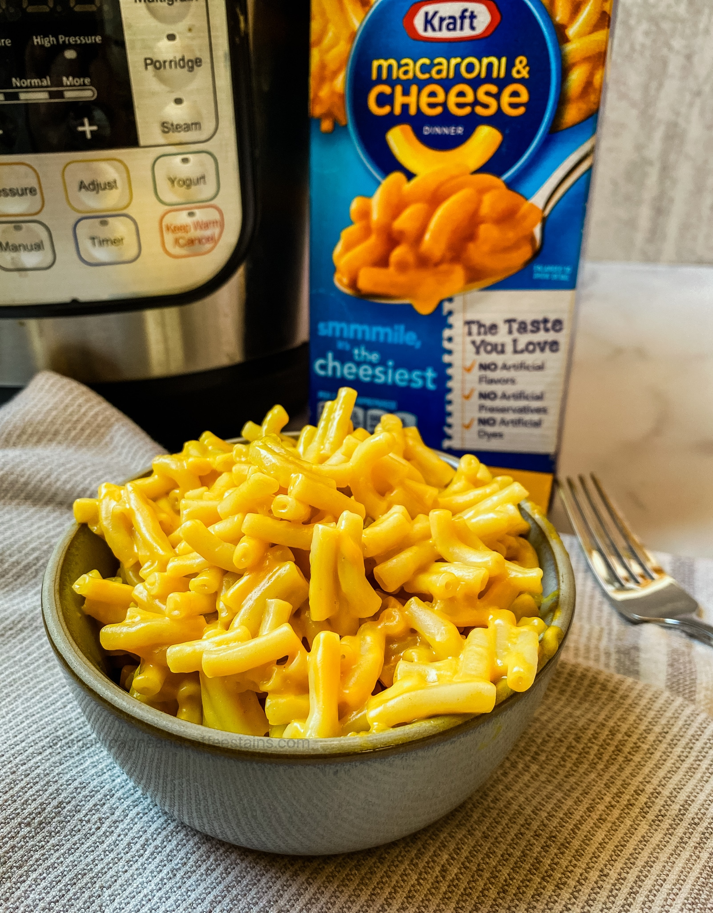

Home
Kraft Mac and Cheese Recipe

Description
A quick and easy dinner made with creamy cheese sauce and tender macaroni. Perfect for busy weeknights or a comforting meal anytime.
Ingredients
- 1 box of Kraft Mac and Cheese
- 4 cups of water
- 1/4 cup of milk
- 2 tablespoons of butter
Steps
- Boil 4 cups of water in a medium-sized pot.
- Add the macaroni from the box to the boiling water.
- Cook the macaroni for 7-8 minutes, stirring occasionally.
- Drain the macaroni and return it to the pot.
- Add 1/4 cup of milk, 2 tablespoons of butter, and the cheese powder from the box to the macaroni.
- Stir everything together until the cheese sauce is smooth and evenly coats the macaroni.
- Serve immediately and enjoy!